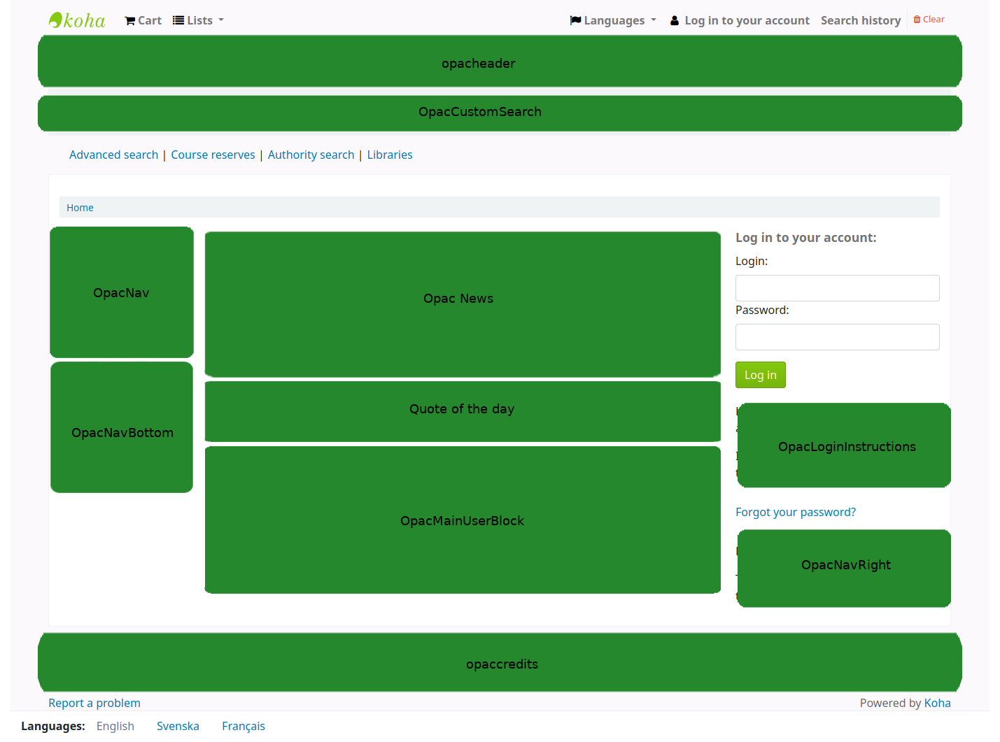
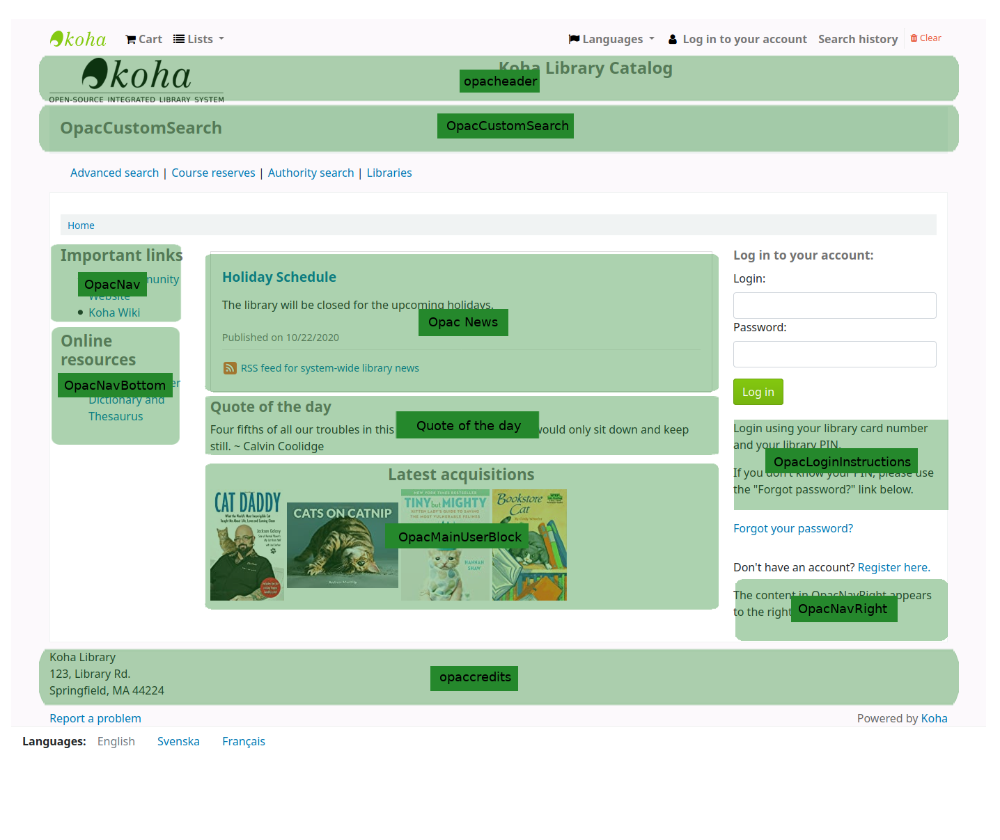

Implementation checklist
The following guide will walk you through the areas of Koha you need to look at in order to prepare to start using the system.
It is not an exhaustive list of everything you need to do. Please consider your own library practices and what other checks are necessary for your own libary and context.
Data migration
Before you can start using Koha you’ll need to have some data. This can be done by entering it all by hand, but most people already have their data in electronic format of some sort and just need to reformat it a bit for importing into Koha.
Create a list of libraries and enter their info and codes into libraries
Define your list of item types
Define your patron categories and enter the categories and their codes into patron categories
Enter any additional patron information fields you use in your library in the patron attributes
This requires that you first enable the ExtendedPatronAttributes system preference if you have custom fields
Define all of your authorized values
Optionally define cities and towns
Map your bibliographic data from your legacy system to Koha fields and migrate (remembering to use the collection, shelving, item type and library codes you entered in the above setting areas)
Map your patron data from your legacy system to the Koha fields and migrate (remembering to use the patron and library codes you defined above)
Test your migrated data to be sure that everything is as you expect it to be, some things to test include:
Check some of your titles with diacritics and make sure that they migrated properly.
Check titles in a series and make sure that series information migrated properly.
Make sure that your patrons have their contact information in the right fields.
If your serials data was migrated search for these records in the catalog and confirm that they look right.
If your serials data was migrated search for these records in the serials module and confirm that they look right.
Check marc records to verify a variety of items are cataloged correctly
Check cataloging process to see if all necessary fields are available
If fines are migrated, check to see that they are applied correctly
If holds are migrated, check to see they are accurate in catalog and patron record
Admin configuration
Most of these preferences won’t need to be changed to use your Koha system, but there are a few that you might want to customize.
If your library uses CAS authentication, you’ll want to set the various CAS system preferences
Administration system preferences
KohaAdminEmailAddress : This is the email address that will be used by the system in ‘from’ lines and to send errors to if there is no email set for the branch
noItemTypeImages : Decide if you want to show item type icons in the staff client and opac
CSVDelimiter : This value will be put in between fields when exporting data from Koha
virtualshelves : Decide if you want the staff and/or patrons to use lists in Koha
AutoLocation : Require staff to log in to the staff client from a specific IP range
IndependentBranches : Prevent librarians from editing content that belongs to other branches
Go through the log system preferences and decide which actions you want to keep track of in the logs
Decide if you’d like to share your library’s information with the Koha community by setting the sharing system preferences.
Decide what cron jobs you need to run and when.
If you’re using the long overdue cron job be sure to set your DefaultLongOverdueChargeValue, DefaultLongOverdueLostValue and DefaultLongOverdueDays preferences.
Localization configuration
Koha is used worldwide and so you need to make sure you set your localization preferences so that options throughout Koha appear properly for your location/language.
Localization/internationalization system preferences
dateformat : Decide how dates are displayed throughout Koha
opaclanguagesdisplay : Decide if patrons can choose what language the OPAC appears in
OPACLanguages : Decide which languages the patrons can choose from
language : Decide which languages appear in the staff interface
CalendarFirstDayOfWeek : Define your first day of the week
Circulation configuration
Before you start circulating your collection you’ll need to set up your rules and preferences for circulation.
Define your circulation and fines rules
Enter the days your library is closed for fines and due date calculations
Circulation system preferences
CircControl : Define whether circ rules are based on item’s location, patron’s location or transaction location
useDaysMode : Define how due dates are calculated
finesCalendar : Define how fines are calculated (for every late date or only for days the library is open)
SpecifyDueDate : Decide if staff are allowed to override due dates on checkout
SpecifyReturnDate : Decide if you want to let the staff specify an arbitrary return date on checkin
itemBarcodeFallbackSearch : Decide if you want staff to be able to checkout using a keyword search (title, call number, etc)
AutomaticItemReturn : Decide if items are sent back to the owning branch when checked in
todaysIssuesDefaultSortOrder : Decide how items checked out today display on the patron record
previousIssuesDefaultSortOrder : Decide how items checked out prior to today display on the patron record
noissuescharge : Define the maximum amount a patron can owe before checkouts are blocked
ReturnBeforeExpiry : Decide if patrons need to return items before their accounts expire
AllowHoldsOnDamagedItems : Decide if patrons can place holds on items that are marked as damaged
AllowHoldPolicyOverride : Decide if you want the staff to be able to override this setting
maxreserves : Decide how many items a patron can have on hold at once
AllowHoldPolicyOverride : Decide if you want the staff to be able to override this setting
maxoutstanding : Define the maximum amount a patron can owe before holds are blocked
AllowHoldPolicyOverride : Decide if you want the staff to be able to override this setting
ReservesMaxPickUpDelay : Define the number of days before a hold expires
WebBasedSelfCheck : Decide if you want to use the built in web-based self-checkout system
AutoSelfCheckAllowed : Decide if the self-checkout system requires login
ShowPatronImageInWebBasedSelfCheck: Decide if you want patron images to show on the self checkout screen
AllowNotForLoanOverride : Decide if you want the staff to be able to checkout items marked as ‘not for loan’
AllowRenewalLimitOverride : Decide if you want staff to override the limit put on renewals
AllowFineOverride : Decide if you want staff to be able to override fine limits
AllowTooManyOverride : Descide if you want staff to be able to check out more than the limit to a patron
RenewalPeriodBase : Decide what date renewals are based on
finesMode : Switch to ‘Calculate and Charge’ before you go live if you charge fines
NoticeBcc: If you want to receive a copy of every notice, enter your email address
emailLibrarianWhenHoldIsPlaced: Decide if you want an email every time a hold is placed
ReservesControlBranch : Decide which branch’s hold rules are considered first
AudioAlerts: Decide if you want to have sounds for circulation actions
Set the sounds and actions in the audio alerts section of the administration module
FilterBeforeOverdueReport : If you have a large amount of overdues, you might want to turn this preference on so as to allow you to filter before results appear
DisplayClearScreenButton : If you have a lot of staff members sharing one circulation computer you might want to enable this so that staff can clear the screen in between checkouts to protect patrons’ privacy
CircAutoPrintQuickSlip : Decide how you want Koha to react if you scan in a blank barcode on the checkout screen
SuspendHoldsIntranet and/or SuspendHoldsOpac : Decide if you want patrons and/or staff to be able to suspend holds
AutoResumeSuspendedHolds : If you allow holds to be suspended decide if you want them to automatically resume on the date entered by the staff and/or patron
- OnSiteCheckoutsDecide if you want to allow items to be checked
out for use within the library
RecordLocalUseOnReturn : Set this to record local use of items when you check them in
Customize your Notices and slips
Define your overdue notice triggers
Set up your cron jobs
Populate your holds queue (every 1-4 hours)
Decide when holds expire (daily)
Calculate fines due (daily)
Fines on hourly loans will calculate when you check the items in
Mark long overdue items as lost (daily)
Decide when the system sends out messages (1-4 hours)
Decide when the system queues overdue notices (daily)
Set up hold notices that didn’t send for printing (daily after overdues and message queue)
Decide when the system queues the advanced notice of items due (daily)
Find holds that need to be resumed and remove suspension (daily)
If you’re allowing automatic renewal of items set them to renew (nightly)
Patron configuration
You have already imported patron data from your old system, but there are plenty of options available to you regarding patrons and their accounts.
Enter your staff members as patrons
Patron system preferences
autoMemberNum : Decide if the patron barcodes are auto-generated or if you enter them yourself
MaxFine : Determine the maximum amount that people can owe in fines
NotifyBorrowerDeparture : Decide when to warn staff that the patron account is about to expire
intranetreadinghistory : Decide if the staff can see the patron’s reading/checkout history
BorrowerMandatoryField : List fields that you want to appear as mandatory on the patron add/edit form
BorrowersTitles : Add or change the titles for your patrons
borrowerRelationship : Add or change borrower relationships (child to adult and professional to organization)
AutoEmailPrimaryAddress : Determine if the patrons get an email confirming the creation of their account
EnhancedMessagingPreferences : Decide if staff can choose from a series of notices (other than overdues) for patrons
EnhancedMessagingPreferencesOPAC: Decide if patrons can choose from a series of notices (other than ovedues) for themselves
patronimages : Decide if you want to save patron pictures in your system
ExtendedPatronAttributes : Decide if you want to enable custom patron fields
minPasswordLength : Enter the minimum number of characters you want passwords to have
BorrowerUnwantedField : Decide what fields your library doesn’t need to see on the patron entry form
Set up your cron jobs
Decide if you would like children to automatically become adults by setting up the Update patron categories cron job.
Cataloging configuration
Before you start cataloging in Koha you’ll want to set up your preferences and other rules.
Define your cataloging templates, or MARC bibliographic frameworks
Run the MARC bibliographic framework test to be sure your changes are valid
Define any authorized values you might want to use in cataloging
Set up custom classification sources (if you use something other than the defaults)
Set up MARC matching rules for importing records from .mrc files
Set up the Z39.50 targets you want to search for cataloging (and acquisitions)
Cataloging system preferences
URLLinkText : Enter text to display when 856 fields do not have pre-defined labels
hide_marc : If you are unfamiliar with MARC you can have the MARC fields number hidden
LabelMARCView : Choose how you want duplicate fields to appear on the editor
DefaultClassificationSource : Choose which classification source is the default in your library
advancedMARCeditor : Decide if you want to use the advanced MARC editor
marcflavour : Choose your MARC format
itemcallnumber : Enter which field and subfields to look into for the call number
MARCOrgCode : Enter your MARC organizational code (not the same as your OCLC number)
autoBarcode : Decide if Koha generates item barcodes for you
OpacSuppression : Decide if you want to hide records marked as suppressed from the OPAC search results
Set up your cron jobs
Decide when the system checks URLs in catalog records to see if they are still valid
Searching configuration
There are several system preferences related to searching, it is not always recommended to make too many changes to these preferences since they are set to get you the most relevant results. If you would like to change the default way that Koha handles searching, view the searching system preferences tab.
Set up your cron jobs
Searching system preferences
AdvancedSearchTypes : Decide which authorized value fields you want patrons and staff to be able to limit their advanced searches by
AdvancedSearchLanguages : Decide which languages you want people to be able to limit to via the search engine
UseAuthoritiesForTracings : Decide how you want Koha to handle subject searches in the OPAC
TraceCompleteSubfields : Decide how you want Koha to handle subject searches in the OPAC
- TraceSubjectSubdivisionsDecide how you want Koha to handle
subject searches in the OPAC
displayFacetCount : Decide whether to show facet counts on search results
OPAC configuration
There are a lot of ways you can customize your OPAC in Koha.
Decide how you want your OPAC to look & what content you want on the main page
Create a library branded stylesheet using CSS
Important
Do not edit the default CSS files, instead create a new one, that way the system can always fall back on the original CSS.
Create a custom XSLT stylesheet to change the way search results and bib records appear in the OPAC
OPAC system preferences
OPACBaseURL : Enter your library’s URL
opacuserlogin : Decide if you want to allow patrons to login to the OPAC to access customized functionality (searching will be allowed without logging in)
OPACHoldRequests : Decide if patrons can place holds via the OPAC
OpacPasswordChange : Decide if patrons can change their password (don’t allow this if you’re using LDAP)
OpacRenewalAllowed : Decide if patrons can renew their checked out items via the OPAC
opacreadinghistory : Decide if patrons can view their reading/ checkout history via the OPAC
OPACComments : Decide if you want to allow patrons to comment on bibliographic records via the OPAC
OpacStarRatings : Decide if patrons can leave star ratings
virtualshelves : Decide if you want patrons to be able to create lists
OpacAllowPublicListCreation: If patrons can create lists then decide if they are allowed to create public lists
suggestion : Decide if you want patrons to be able to submit purchase suggestions
OPACViewOthersSuggestions : Decide if you want patrons to be able to see purchase suggestions made by other patrons
opacbookbag : Decide if patrons can save items into their cart
AnonSuggestions : Decide if you want non logged in users to be able to make purchase suggestions
LibraryName : Enter your library name for display in the <title> tag and on the top of the OPAC
OpacNav : Enter HTML that will appear to the left on the main OPAC page
OpacNavBottom : Enter HTML that will appear below OpacNav
OPACNoResultsFound : Enter the HTML that will appear when no results are found
OPACResultsSidebar : Enter the HTML that will appear below the facets on your search results
OPACMySummaryHTML : Enter the HTML that will appear in the far right of the circulation summary in the OPAC
Customize your stylesheets:
OPACUserCSS : Enter any additional fields you want to define styles for
opaclayoutstylesheet : Point to a CSS file on your Koha server
OpacHighlightedWords : Decide if you want search terms to be highlighted on the search results
hidelostitems : Decide if you want to show patrons items you have marked as lost
BiblioDefaultView : Decide what view is the default for bibliographic records on the OPAC
OPACShelfBrowser : Decide if you want to enable the shelf browse functionality
OPACURLOpenInNewWindow : Decide if URLs clicked in the OPAC are opened in a new window
SearchMyLibraryFirst : If you have a multi-branch system decide if you want patrons to search their library first
OpacAuthorities : Decide if you want patrons to be able to search your authority file
OpacBrowser : Decide if you want patrons to browse your authority file (French libraries only)
OPACSearchForTitleIn : Choose which libraries you want patrons to be able to re-run their search in
OpacAddMastheadLibraryPulldown : If you’re a multi-branch system you can add a pull down to the search bar for patrons to search which library to search
EnableOpacSearchHistory : Decide if you want the system to keep a search history
Set up your cron jobs
If you have the OpacBrowser preference set decide when you want the contents to rebuild (French libraries only)
If you have custom RSS feeds, decide when you want the feed to be populated
Editable OPAC regions
Using the news tool you can customize various blocks of the OPAC. The following graphic shows what each display location updates in the Bootstrap theme.


Some of the regions are system preferences:
And ‘quotes of the day’ are managed in the Quote of the day editor
Enhanced content configuration
Koha allows you to pull in content from outside sources to enhance your bibliographic records. All of this content can be toggled on and off using the enhanced content system preferences.
-
If you would like to have your OPAC and/or staff interdace show an ‘Editions’ tab on the bibliographic record, you want to enable one or the other FRBR preferences and then the ISBN service ThingISBN.
Amazon : This service is free and just requires that you visit http://aws.amazon.com to sign up
Using the Amazon preferences you can choose to show cover images from Amazon.
-
This is a paid service. Contact Babelthèque to learn how to enable this content in the OPAC.
-
This is a paid service from Baker & Taylor. Contact Baker & Taylor for the information to enter into these preferences.
-
This allows libraries to embed streaming media in their catalog
-
This service is free and does not require registration, simply enable GoogleJackets and you’re set to go.
-
This is a paid service from Ebsco. Contact Ebsco for the information to enter into these preferences
-
Open Library project is an open system that you can pull cover images (and in the future additional content) from
-
This is a paid service that libraries can subscribe to for ebook content. If the library subscribes to Overdrive they can integrate that content in to Koha for free.
-
This is a paid service from Syndetics to add content for your bibliographic records. Contact Syndetics for the information to enter into these preferences.
-
Choose whether or not you want to allow patrons to add tags to records in Koha.
Acquisitions configuration
When using acquisitions in Koha you first need to define some defaults.
Set up your funds and budgets
Choose your default currency and enter others if you order from multiple countries
Enter in your vendor information
Create an framework with the code ACQ (if you’re going to enter item records at the time of ordering or receiving)
Acquisitions system preferences
AcqCreateItem : Decide if an item record is created during acquisition
CurrencyFormat : Decide how you want monetary amounts to display
TaxRates : Enter your sales tax (if you are billed for tax)
OrderPdfFormat : Decide what format you want your print orders to use
Serials configuration
When you use serials there are a few options you can set before hand.
Serials system preferences
RenewSerialAddsSuggestion : Decide if you want renewing serials to add a suggestion for easy purchasing
RoutingSerials : Decide if you want to route serials around your library
RoutingListAddReserves : Decide if holds are placed on serials when there is a routing list in place
Cataloging system references
StaffSerialIssueDisplayCount : Decide how many of the most recent issues to display in the staff interface
OPACSerialIssueDisplayCount : Decide how many of the most recent issues to display in the OPAC
SubscriptionHistory : Decide how you want the subscription information to display in the OPAC
Planning for go-live
Once you have all of your settings ready, you need to prepare for making your system live:
Decide if you need training by an outside service provider or if your staff can do the training themselves.
Make sure that there is time for your staff to play with your test system and get comfortable with it
If this is a migration, work with your previous company to extract data right before you go-live
Decide on URLs for your new Koha OPAC and staff interface and arrange for these to be cut-over if using existing system URLs, or created if they are new URLs
Make sure that if you’re hosting your own system you have a process in place to back-up your system data.